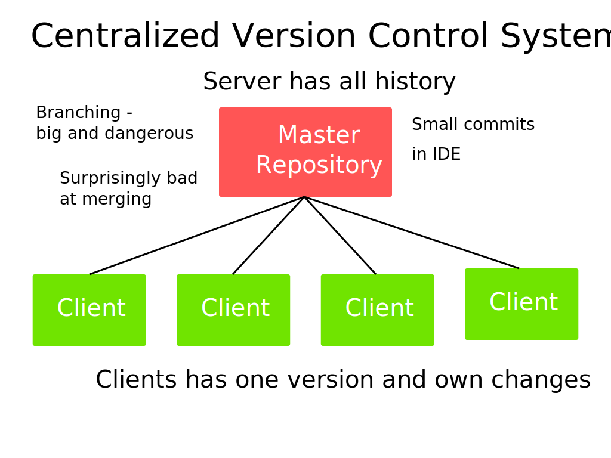
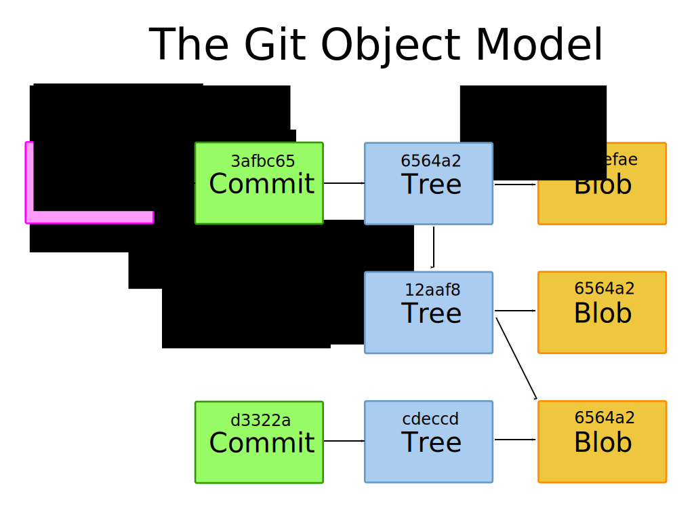
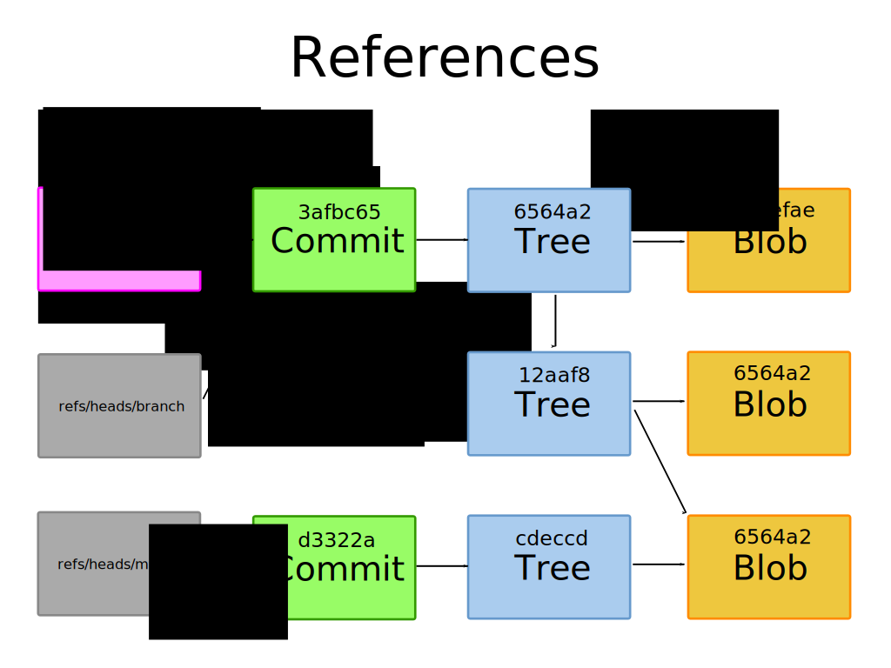
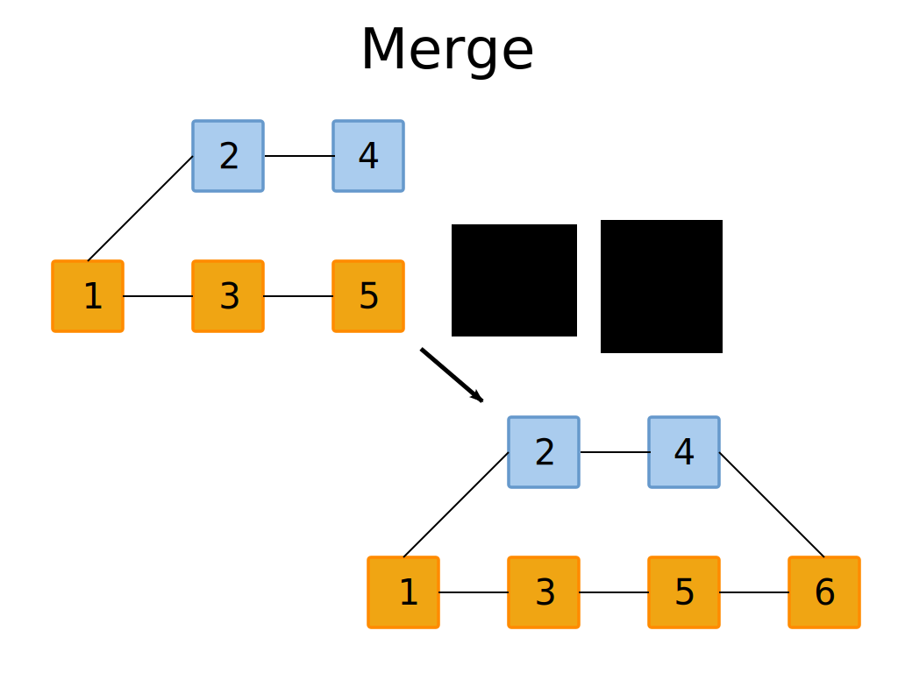
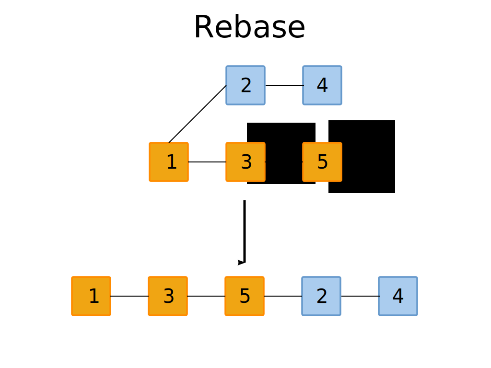
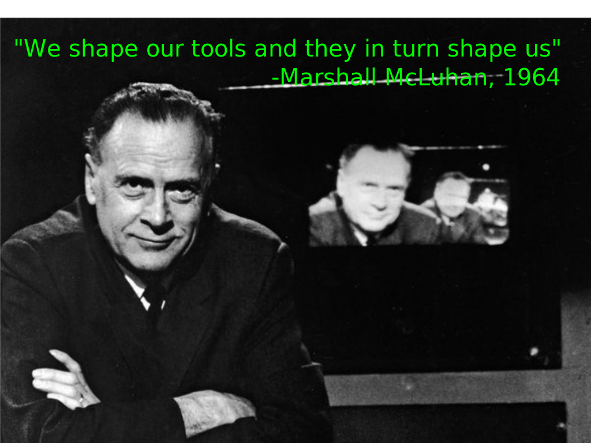

Git
Version Control You've Only Dreamt Of
Marcus Ahnve
Valtech AB
marcus.ahnve@valtech.se
@mahnve

(Images in presentation are SVG's, so for now this presentation requires Firefox 4)
About me
- Software Developer
- Polyglot Programmer
- Used Mercurial fulltime for 15 months
- Used Git since 2008, full time for a year
History
Now
Projects Using Git

Problem with Centralized Version Control
- Offline - No such thing
- Branching - Big things
- Small commits - implemented in IDE's instead
- Merging - Normally suck at branching




Won't it be awfully big?
- Ruby on Rails Subversion repo was 115M
- A checkout was 9M
- After converting, the a Git repo was 13M
Settings
$ cat ~/.gitconfig
[user]
name = Marcus Ahnve
email = marcus@ahnve.com
[color]
diff = auto
status = auto
branch = auto
ui = true
[apply]
whitespace = nowarn
[alias]
ci = commit -a
co = checkout
st = status
br = branch
[github]
user = mahnve
token = <secret>
[merge]
tool = vimdiff3
[mergetool "gvimdiff3"]
cmd = gvim -f -d -c \"wincmd J\" \"$MERGED\" \"$LOCAL\" \"$BASE\" \"$REMOTE\"
[mergetool "vimdiff3"]
cmd = vim -f -d -c \"wincmd J\" \"$MERGED\" \"$LOCAL\" \"$BASE\" \"$REMOTE\"
[core]
autocrlf = input
safecrlf = true
List settings with git command
$ git config --global -l
user.name=Marcus Ahnve
user.email=marcus@ahnve.com
color.diff=auto
color.status=auto
color.branch=auto
color.ui=true
apply.whitespace=nowarn
alias.ci=commit -a
alias.co=checkout
alias.st=status
alias.br=branch
github.user=mahnve
github.token=<secret>
merge.tool=vimdiff3
mergetool.gvimdiff3.cmd=gvim -f -d -c "wincmd J" "$MERGED" "$LOCAL" "$BASE" "$REMOTE"
mergetool.vimdiff3.cmd=vim -f -d -c "wincmd J" "$MERGED" "$LOCAL" "$BASE" "$REMOTE"
core.autocrlf=input
core.safecrlf=true
Change settings with git command
$ git config --global --add user.name 'Marcus Ahnve'
Make a repository
$ git init
Initialized empty Git repository in /home/mahnve/src/test/.git/
$ touch tmp.txt
$ git status
# On branch master
#
# Initial commit
#
# Untracked files:
# (use "git add <file>..." to include in what will be committed)
#
# tmp.txt
Add files
$ git add .
$ git status
# On branch master
#
# Initial commit
#
# Changes to be committed:
# (use "git rm --cached <file>..." to unstage)
#
# new file: tmp.txt
#
Commit changes
$ git commit -m 'initial commit' ──master(Tue,Mar08)─┘
[master (root-commit) 21a58a0] initial commit
0 files changed, 0 insertions(+), 0 deletions(-)
create mode 100644 tmp.txt
Logs
$ git log ──master(Tue,Mar08)─┘
commit 21a58a0d71b1e2b2da47999a43b2bffacfc354af
Author: Marcus Ahnve <marcus@ahnve.com>
Date: Tue Mar 8 22:59:42 2011 +0100
Change a file
$ echo foo >> tmp.txt
$ git status
# On branch master
# Changes not staged for commit:
# (use "git add <file>..." to update what will be committed)
# (use "git checkout -- <file>..." to discard changes in working directory)
#
# modified: tmp.txt
#
no changes added to commit (use "git add" and/or "git commit -a")
Add and commit again
$ git commit -am 'change'
[master d9bc3ef] change
1 files changed, 1 insertions(+), 0 deletions(-)
Detailed logs
$ git log --stat
commit d9bc3ef1d51797517cc0bcc647cdd2e34d63ad3a
Author: Marcus Ahnve <marcus@ahnve.com>
Date: Wed Mar 9 10:08:15 2011 +0100
change
tmp.txt | 1 +
1 files changed, 1 insertions(+), 0 deletions(-)
commit 21a58a0d71b1e2b2da47999a43b2bffacfc354af
Author: Marcus Ahnve <marcus@ahnve.com>
Date: Tue Mar 8 22:59:42 2011 +0100
initial commit
0 files changed, 0 insertions(+), 0 deletions(-)
Logs with graphs
$ git log --graph
* commit d9bc3ef1d51797517cc0bcc647cdd2e34d63ad3a
| Author: Marcus Ahnve <marcus@ahnve.com>
| Date: Wed Mar 9 10:08:15 2011 +0100
|
| change
|
* commit 21a58a0d71b1e2b2da47999a43b2bffacfc354af
Author: Marcus Ahnve <marcus@ahnve.com>
Date: Tue Mar 8 22:59:42 2011 +0100
initial commit
Short logs
$ git log --pretty=oneline
d9bc3ef1d51797517cc0bcc647cdd2e34d63ad3a change
21a58a0d71b1e2b2da47999a43b2bffacfc354af initial commit
Create a branch
$ git branch new_branch
$ git checkout new_branch
Switched to branch 'new_branch'
Create and check out branch
$ git checkout -b another_branch
Switched to a new branch 'another_branch'
List branches
$ git branch
* another_branch
master
new_branch
Edit file in branch
$ echo minor edit >> tmp.txt
$ cat tmp.txt
foo
minor edit
$ git commit -am 'minor edit'
[master c5c23b1] minor edit
1 files changed, 1 insertions(+), 1 deletions(-)
$ git checkout master
Switched to branch 'master'
$ cat tmp.txt
foo
Edit file on master branch
$ echo another edit >> tmp.txt
$ cat tmp.txt
foo
another edit
$ git commit -am 'another edit'
[master 40fd970] another edit
1 files changed, 1 insertions(+), 0 deletions(-)
$ git log --graph --all
* commit 40fd970ef0563410d14f4c8e3b8182f1c5c096dc
| Author: Marcus Ahnve <marcus@ahnve.com>
| Date: Wed Mar 9 11:58:01 2011 +0100
|
| another edit
|
| * commit 4e2bf677f395aca1fa49ddbdcd14c9a6c3616dff
|/ Author: Marcus Ahnve <marcus@ahnve.com>
| Date: Wed Mar 9 11:47:13 2011 +0100
|
| minor edit
|
* commit 2a728d827291980c0182f4bdc41b53b51c99ee9c
| Author: Marcus Ahnve <marcus@ahnve.com>
| Date: Wed Mar 9 11:41:49 2011 +0100
|
| change
|
* commit 21a58a0d71b1e2b2da47999a43b2bffacfc354af
Author: Marcus Ahnve <marcus@ahnve.com>
Date: Tue Mar 8 22:59:42 2011 +0100
initial commit

Merging
$ git merge another_branch
Auto-merging tmp.txt
CONFLICT (content): Merge conflict in tmp.txt
Automatic merge failed; fix conflicts and then commit the result.
$ cat tmp.txt
foo
another edit
minor edit
$ git add .
$ git commit -m 'manual merge'
[master 1f55c18] manual merge

Rebasing
$ git co another_branch
Switched to branch 'another_branch'
$ git rebase master
First, rewinding head to replay your work on top of it...
Applying: minor edit
Using index info to reconstruct a base tree...
Falling back to patching base and 3-way merge...
Auto-merging tmp.txt
CONFLICT (content): Merge conflict in tmp.txt
Failed to merge in the changes.
Patch failed at 0001 minor edit
When you have resolved this problem run "git rebase --continue".
If you would prefer to skip this patch, instead run "git rebase --skip".
To restore the original branch and stop rebasing run "git rebase --abort".
Rebase conflicts
$ git add .
$ git rebase --continue
Applying: minor edit
$ git checkout master
Switched to branch 'master'
$ git merge another_branch
Updating 40fd970..f6e5616
Fast-forward
tmp.txt | 1 +
1 files changed, 1 insertions(+), 0 deletions(-)
Deleting branches
$ git branch -[d|D] another_branch
Deleted branch another_branch (was f6e5616).
Stashing
$ echo temp change >> tmp.txt
$ git stash
Saved working directory and index state WIP on master: 40fd970 another edit
HEAD is now at 40fd970 another edit
$ git status
# On branch master
nothing to commit (working directory clean)
$ git stash pop
# On branch master
# Changes not staged for commit:
# (use "git add <file>..." to update what will be committed)
# (use "git checkout -- <file>..." to discard changes in working directory)
#
# modified: tmp.txt
#
no changes added to commit (use "git add" and/or "git commit -a")
Dropped refs/stash@{0} (254470f2880fce9f95df249a15cd29d3a7c5f863)
Git reset
$ cat tmp.txt
foo
another edit
minor edit
$ git reset 40fd97
HEAD is now at 40fd970 another edit
$ cat tmp.txt
foo
another edit
Reset options
- hard - resets index and working tree
- mixed - resets index, leaves working tree
- soft - leaves both index and working tree
Protocols
- http
- ssh
- git
So You Have An Error
$ git bisect start
$ git bisect bad
Find a Good Revision
$ git checkout e8adad403f52c
Note: checking out 'e8adad403f52c4'.
You are in 'detached HEAD' state. You can look around, make experimental
changes and commit them, and you can discard any commits you make in this
state without impacting any branches by performing another checkout.
If you want to create a new branch to retain commits you create, you may
do so (now or later) by using -b with the checkout command again. Example:
git checkout -b new_branch_name
HEAD is now at e8adad4... history and roundup
Mark Revisions As Good Or Bad
$ git bisect good
Bisecting: 1 revision left to test after this (roughly 1 step)
[5525ce7f14c667a9b63b17fab700395016db78f4] about and bullets
$ git bisect good
Bisecting: 0 revisions left to test after this (roughly 0 steps)
[d9a77ce4e413fae35bff64d072232bbad951a4f1] remotes and tools
Mark the Final Revision
$ git bisect bad
d9a77ce4e413fae35bff64d072232bbad951a4f1 is the first bad commit
commit d9a77ce4e413fae35bff64d072232bbad951a4f1
Author: Marcus Ahnve <marcus@ahnve.com>
Date: Wed Mar 9 19:44:26 2011 +0100
remotes and tools
:100644 100644 b777d11f846fb6be51c1ddde1195d0496929c005 f6a8bb613ab2f51582444a443abe808fdaf2a90b M notes.md
:000000 040000 0000000000000000000000000000000000000000 3a05fdf21845da07668d49fbb350f856d3ccd25d A remotes
:000000 040000 0000000000000000000000000000000000000000 8e6702d84866839729eb6b734e9db1f591aa7c4e A tools
Finish the Bisecting
$ git bisect reset
Previous HEAD position was d9a77ce... remotes and tools
Switched to branch 'master'
Your branch is ahead of 'origin/master' by 1 commit.
Editor Integration
- Eclipse - EGit
- IntelliJ - Out of the box
- Visual Studio - Git Extensions
Other tools
- gitk
- GitX
- gitg
- TortoiseGit
- msysgit

Thank You!